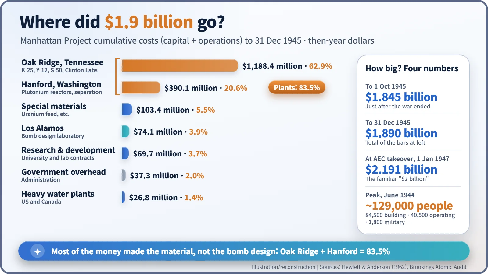
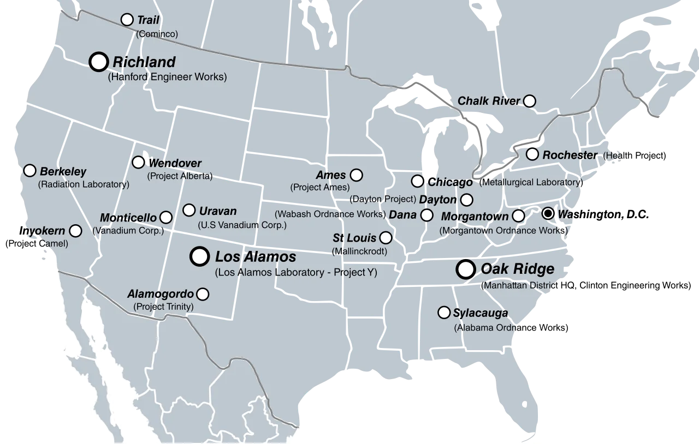
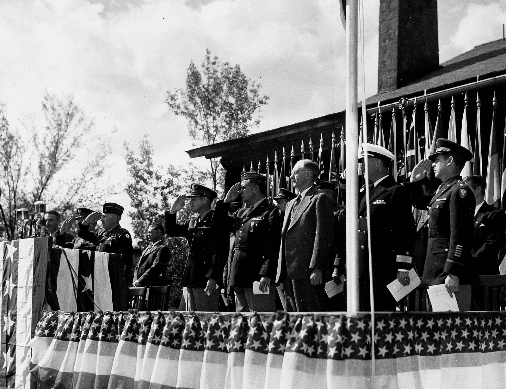
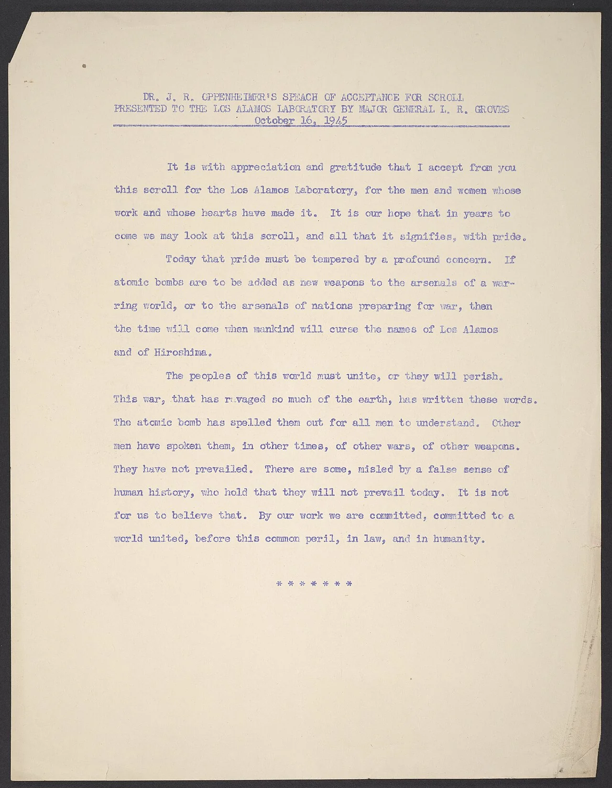
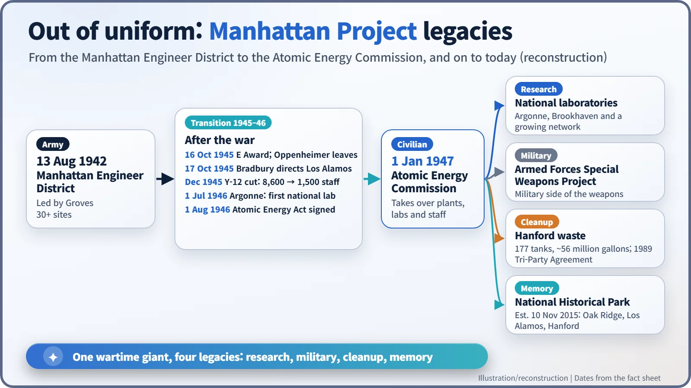

Nuclear History · 125
Reading the Receipt — the Manhattan Project in Dollars, People and Legacy (1942–1946)
About $1.89 billion by the end of 1945, 83.5% of it spent making uranium and plutonium, and a legacy of national labs, cleanup and memory.
By the end of 1945 the Manhattan Project had cost about $1.89 billion, and more than 83% of it went into the uranium and plutonium plants at Oak Ridge and Hanford rather than bomb design. At its peak in June 1944 it employed about 129,000 people. On 1 January 1947 a civilian Atomic Energy Commission took it over, and its legacies, from national laboratories to the Hanford cleanup, are still with us.
Reading the receipt
What does the receipt for one of the most expensive scientific undertakings in history look like? We actually have it. According to the accounts compiled by the Atomic Energy Commission's official historians, Richard G. Hewlett and Oscar E. Anderson Jr., the Manhattan Project had cost $1,889,604,000 by 31 December 1945, a figure recorded down to the last thousand dollars. Read that receipt line by line and the true shape of the atomic bomb enterprise comes into view. [1] [2]
The ingredients cost more than the recipe
The first thing that jumps out is the split. Oak Ridge, Tennessee, took about $1,188 million; Hanford, Washington, about $390 million. Together that is 83.5% of the total. Oak Ridge housed the plants that separated uranium-235; Hanford ran the reactors and chemical plants that made plutonium.
Los Alamos, the laboratory that actually designed and assembled the bombs, accounted for about $74 million, or 3.9%. Put it in kitchen terms: the ingredients cost roughly twenty times more than the chefs. Having the idea was not the hard part. Gathering, on an industrial scale, fissile materials that exist in nature only in tiny amounts was overwhelmingly harder and more expensive. [2]

People usually say "$2 billion", but the number depends on when you stop counting. It was $1.845 billion by 1 October 1945, about $1.89 billion by the end of that year, and $2.191 billion when the Atomic Energy Commission took over on 1 January 1947. One common conversion puts "nearly $2 billion" at about $28 billion in 2025 dollars, though such estimates vary with the method used. [3]
A secret the size of the car industry
In people, the peak came in June 1944, with about 129,000 workers: 84,500 in construction, 40,500 running the plants, and just 1,800 in uniform. Most of them, from Nobel laureates to day labourers, did not know what they were building. The US Department of Energy's official history notes that by 1945 the industrial base created for the project was comparable in size to the American automobile industry. Research and production ran at more than 30 sites across the United States, Britain and Canada. [3] [4]

A warning at a celebration
When the war ended, the question became what to do with this enormous machine. On 16 October 1945, in front of Fuller Lodge at Los Alamos, the laboratory received the Army-Navy "E" Award for excellence in production. General Leslie R. Groves (1896–1970) presented a scroll, and the director, J. Robert Oppenheimer (1904–1967), gave the acceptance speech. At a moment meant for celebration he said: [5]
"Today that pride must be tempered by a profound concern. If atomic bombs are to be added as new weapons to the arsenals of a warring world, or to the arsenals of nations preparing for war, then the time will come when mankind will curse the names of Los Alamos and of Hiroshima."


That was Oppenheimer's last day as director. The next day Norris Bradbury (1909–1997) took over and went on to lead the laboratory for about 25 years. At Oak Ridge, shutting down part of the Y-12 plant in December 1945 cut the operating contractor's payroll from 8,600 to 1,500. At Hanford, General Electric replaced DuPont as operator. [4]
Out of uniform
On 1 August 1946, President Truman signed the Atomic Energy Act (the McMahon Act), moving control of atomic energy from the military to a civilian commission. The Atomic Energy Commission (AEC), chaired by David E. Lilienthal (1899–1981), took over the project's plants, laboratories, equipment and people on 1 January 1947. The military side of the weapons passed to the new Armed Forces Special Weapons Project.

What it left behind: labs, a cleanup bill, and memory
The longest-lasting legacy was a way of doing research. Argonne, which grew out of Chicago's Metallurgical Laboratory, became the first US national laboratory on 1 July 1946, and that same month nine north-eastern universities agreed to run what became Brookhaven National Laboratory. Government money, university or industrial management, and thousands of people pulling toward one goal: Oak Ridge's Alvin Weinberg would later call this "Big Science". Post-war nuclear power research grew up inside this network. [4]
There were shadows too. At Hanford, about 56 million gallons of radioactive and chemically hazardous waste from plutonium production sit in 177 underground tanks. Cleanup continues under the 1989 Tri-Party Agreement between the Department of Energy, Washington State and the Environmental Protection Agency. People displaced from the sites, and residents seeking compensation for radiation exposure, remain part of a discussion that has not ended. [7]
And there is memory. On 10 November 2015 the US Departments of the Interior and Energy signed the agreement that formally established the Manhattan Project National Historical Park, joining Oak Ridge, Los Alamos and Hanford. The war's biggest secret is now history that anyone can visit. The costliest line on the receipt was the material, but what lasted longest were the institutions, the people, and the question of how this technology should be handled. [6]